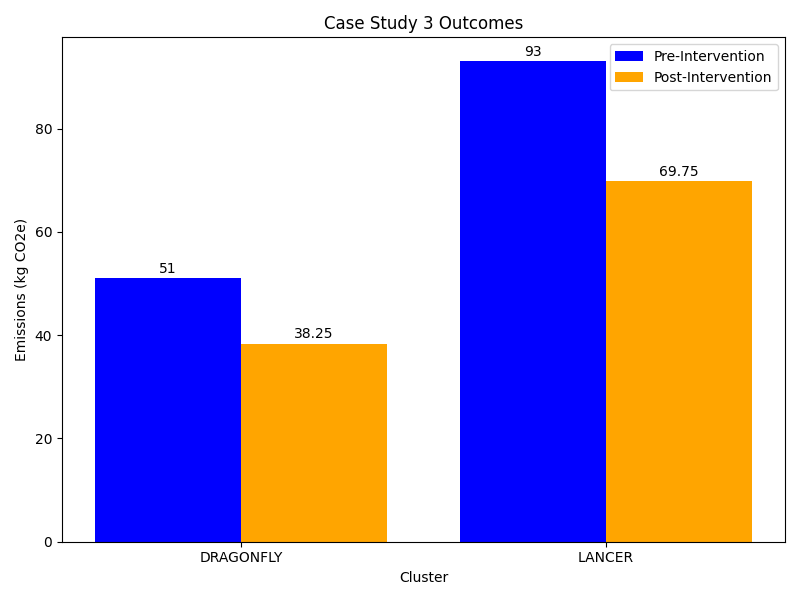

Case Study 3 - HPC User
Last updated on 2026-05-12 | Edit this page
Estimated time: 30 minutes
Overview
Questions
- What are the key sources of carbon emissions when using High Performance Computing facilities?
- How can HPC users estimate emissions when clusters provide different levels of carbon monitoring tools?
- What strategies can reduce carbon emissions from HPC workloads without compromising research throughput?
- How do workload optimization, resource selection, and job management affect carbon emissions?
Objectives
- Collect usage data across multiple HPC facilities and estimate associated carbon emissions using available tools and approximation methods.
- Analyze HPC workload patterns to identify wasted computation, optimization opportunities, and hardware efficiency differences.
- Evaluate trade-offs between computational speed and resource efficiency through benchmarking studies.
- Implement emission reduction strategies including code compilation optimization, workload benchmarking, better job validation, and strategic resource allocation.
Introduction
Hugh is a computational chemist in a research group whose work involves high fidelity simulations of the dynamic behaviour of atomistic systems. His work requires computational resources far beyond that of a single machine so he makes use of a number of High Performance Computing facilities.
Hugh is working on several different research questions that requires the use of different simulation software. Choice of which software to use is usually driven by existing research data and the capabilities of different codes. Whilst he often makes use of software that has been pre-installed by system administrators, he sometimes has to compile packages himself.
In addition to simulation work, Hugh carries out data analysis and creates visualisations.
Hugh has access to 2 different HPC facilities he can make use of:
- a general purpose institutional cluster offering a mix of CPUs.
- a cluster providing targeted support for the atomistic simulation community.
Both facilities are heavily subscribed and Hugh tries to maximise his throughput at all times. Workloads on these clusters are submitted to a queue and will start running at an unknown time. Almost all of his workloads run for at least 48 hours.
Collecting Information
Hugh starts by doing some background research about the two clusters he uses.
DRAGONFLY is a cluster based in London. It doesn’t publish any sustainability information. The documentation pages provide some lists of the available hardware but these are fairly high level and don’t include specific CPU or server models.
LANCER is a cluster based in Wales. Its documentation has some dedicated information on sustainability including a GHG analysis of the cluster. This includes an embodied emissions analysis as well as total power usage. Most usefully Hugh finds that the cluster provides a tool for users to estimate the carbon emissions of their workloads. This tool has been tested and calibrated for the cluster so should be fairly accurate.
Hugh then considers each of the emissions sources in turn.
Electricity usage from HPC workloads
Hugh realises that carbon emissions associated with his HPC usage are directly related to his level of usage. Currently Hugh is fairly sure he uses LANCER the most but he doesn’t track exactly how much and what workloads he runs. Collecting this data will be an important first step.
Even without detailed data Hugh is confident that his simulation workloads form more than 90% of his cluster usage. As the data analysis workflows also tend to be more diverse he decides to focus his initial efforts on his simulation workloads as he will get the most impact from improving those.
Hugh also notes that most of his simulation workloads run for at least 48 hours and he has no control over when they start running. He therefore concludes that there is little scope to exploit demand shifting to reduce carbon intensity.
Embodied Emissions from HPC facilities
Whilst the embodied emissions for the clusters are relevant to calculating the carbon impact of his work, Hugh notes that these are a sunk cost that he is unable to impact at this point. LANCER provides some data but DRAGONFLY doesn’t provide nearly enough information to make much headway. Hugh emails the admins of DRAGONFLY but they’re unable to provide him with more information. Based on this Hugh decides not to consider embodied emissions in his analysis.
Analysis
Delivery of the rest of this material is intended to go in two phases:
Attendees are expected to complete the “Estimating Emissions” challenge. This is best done in groups. After the group task, attendees can report back on what they’ve come up with.
Then attendees can open the spoiler tag - “Hugh’s estimates”. This section provides the “canonical” outcome of Hugh’s emissions estimates and further develops the scenario so that reductions in emissions can be considered. It is recommended that the groups from above look through the section together and complete the embedded challenge.
Estimating Emissions
Based on the scenario described above how could Hugh estimate the carbon emissions associated with his HPC workloads over a year? What additional data would he need to collect?
Hugh needs two things.
- An estimate of his resource usage over a year. It may be possible to reconstruct this from historical data or he may have to monitor his usage for a period of time and then extrapolate to annual usage from there. To simplify this he can focus on only his main simulation campaigns and exclude any data analysis workloads. Key data he’ll want to track includes CPU-hours and Gb-hours of memory usage.
- A method to estimate emissions from his usage. For LANCER this is straightforward using the tooling that’s supplied for the cluster. Making an estimate for DRAGONFLY is harder without equivalent tooling. There are several options. Hugh could attempt to use a model like the Green Algorithms Calculator if he has sufficient information about the hardware used by DRAGONFLY. A simpler alternative would be to assume that emissions for a given set of resources are the same between DRAGONFLY and LANCER then extrapolate from LANCER emissions estimates to get equivalents for DRAGONFLY. In both cases the estimate for DRAGONFLY is likely to be much more approximate but is still useful to have.
For the next two weeks Hugh keeps track of the workloads that he runs on the different clusters. He tracks the total CPU-hours spent on different clusters and the different simulation codes used on each one. He also gets the total estimated emissions for LANCER using the provided cluster tooling.
| Cluster | Simulation Code | Total CPU-hours | Notes | Emissions (kgCO₂e) |
|---|---|---|---|---|
| DRAGONFLY | GROMINZ | 45,000 | Self-compiled | |
| ORANGE | 30,000 | |||
| LUMMPS | 20,000 | |||
| LANCER | GROMINZ | 60,000 | Self-compiled | 32 |
| ORANGE | 40,000 | 21 | ||
| LUMMPS | 75,000 | 40 |
The total estimated emissions are 94 kgCO₂e from the two week period. Hugh also decides to estimate his emissions from DRAGONFLY by scaling the emissions of LANCER by the difference in CPU-hours used on both systems - he’s aware that LANCER and DRAGONFLY are quite different and so this value for DRAGONFLY is very approximate.
Estimating DRAGONFLY emissions
Based on the above approach, estimate the emissions from DRAGONFLY for each of the simulation codes.
Taking GROMINZ as an example:
\[ Emissions_{DRAGONFLY} = \frac{Resources_{DRAGONFLY}}{Resources_{LANCER}} * Emissions_{LANCER} \\ Emissions_{DRAGONFLY} = \frac{45000 CPUhours}{60000 CPUhours} * 32 kgCO_2e \\ Emissions_{DRAGONFLY} = 24 kgCO_2e \]
Applying this to the other simulation codes gives:
| Cluster | Simulation Code | Total CPU-hours | Notes | Emissions (kgCO₂e) |
|---|---|---|---|---|
| DRAGONFLY | GROMINZ | 45,000 | Self-compiled | 24 |
| ORANGE | 30,000 | 16 | ||
| LUMMPS | 20,000 | 11 | ||
| LANCER | GROMINZ | 60,000 | Self-compiled | 32 |
| ORANGE | 40,000 | 21 | ||
| LUMMPS | 75,000 | 40 |
This gives a total 144 kgCO₂e from the two week period.
Whilst collecting the above data Hugh also notes that around 15,000 CPU-hours were wasted on workloads that he hadn’t setup properly and which had to be repeated. He estimates this corresponds to around 8 kgCO₂e.
To better understand what this figure means Hugh, takes his total emissions figure from the two weeks and compares it with other emissions sources. He finds that 144 kgCO₂e is approximately equivalent to driving for around 500 miles in a petrol fueled car1.
Scaling the number for two weeks up to a full year, Hugh gets a total of 3.5 TCO₂e. He notes that this is close to the UK per-capita emissions for energy generation. This means the electricity demands of his work is nearly equivalent to those of whole second person.
Taking Action
Similarly to above, the below challenge can be tackled collectively and attendees can report back on their results.
The following spoiler section then rounds out the scenario and provides a “canonical” outcome. Suggest that the below “outcomes” section is delivered to all attendees.
Planning Action
Based on the outcome of Hugh’s data collection and analysis consider the following:
- Where would Hugh derive the most impact to reduce emissions?
- What steps could Hugh take to reduce the emissions associated with his work? These might be technical or changes to his work practices.
For focussing his future actions and exploration:
- Hugh spends the most CPU-hours on LANCER.
- Hugh spends the most CPU-hours using GROMINZ.
The 15,000 wasted CPU-hours are also a good focus as the associated emissions were non-productive.
There are many steps Hugh could take to reduce emissions. Keep a record of the ideas you’ve had and compare them with those in the next section.
Based on the data gathered above Hugh observes:
- He spends the most CPU-hours on LANCER.
- He spends the most CPU-hours using GROMINZ.
This suggests Hugh will get the most impact by focussing his efforts on these areas. Hugh wants to be able to measure the impact of any changes he makes which can be best done using the emissions tooling on LANCER. He’s also confident that most changes he makes on LANCER will be transferable to DRAGONFLY even if he can’t measure the impact so directly there.
In order to minimise his emissions Hugh realises he can both improve the efficiency of the simulations he performs and try to reduce the overall amount of simulation.
Reducing Simulation
The 15,000 wasted CPU-hours of simulation are an obvious initial target. Hugh reviews the jobs that went wrong and identifies the root causes. He then adjusts his workflows to prevent them happening again. To help in the future, he agrees with a member of his research group that they will double check each others simulation inputs before starting significant new simulation projects. With these measures Hugh estimates that he may be able to reduce his wasted CPU-hours by half.
Hugh’s work requires running simulations for many individual timesteps but it’s often not obvious in advance how many timesteps are required. Reviewing some of his recent projects Hugh concludes that by monitoring his workloads more closely he can terminate some of them earlier. Hugh estimates this could reduce the CPU-hours used per project by 10%.
Optimising Workloads
Hugh notes that GROMINZ is less commonly used in his field and so he has had to compile it himself on both clusters. Hugh doesn’t have a lot of experience doing this and had to piece together how to do it with some online searching and notes from a old colleague. Hugh reaches out to the authors of the code who are able to give him some general advice but can’t offer tailored help. Hugh also gets in touch with the local Research Software Engineering team at his institute who are more familiar with the clusters and are able to provide a small amount of effort to help. Together they identify some tweaks to the compilation and manage to get a 5% speed boost.
To better understand the differences between the codes and clusters he uses Hugh carries out some performance benchmarking. He runs simulations with all of his simulation codes across both clusters. Hugh carefully designs these simulations to be short, so as to not generate too many emissions, but representative of typical workloads. A key finding he identifies is that GROMINZ runs 15% faster on LANCER when using the same number of CPU cores. Meanwhile, ORANGE and LUMMPS don’t show much difference between the two clusters. Hugh realises he can work more efficiently by shifting as much of his work using GROMINZ to LANCER as possible.
Most of Hugh’s simulations require him to run jobs in parallel, using many CPU cores and cluster nodes at the same time. Hugh is familiar with the fact that as his jobs use increasing amount of resources there is a trade-off in computational efficiency. With some of his current projects Hugh realises he has not put much thought into choosing the resources used. Taking one of his recent projects Hugh carries out some benchmarking by running the same simulation using different sets of computational resources. He identifies that for that set of simulations he could have reduced his use of computational resources by 20% whilst only losing 10% speed. Hugh resolves to carry out this sort of benchmarking for all new projects he starts to identify a good trade-off between speed and efficiency.
Outcomes

Putting all of the above steps together Hugh estimates that he can reduce his overall use of CPU-hours by 25% across both clusters. This would result in a saving of ~36 kgCO2 from his two week data collection period. Expanding this over a full year gives a reduction of nearly 936 kgCO2. Hugh also continues to collect data on his HPC workloads so that he can assess the impact of the changes he’s made in the future.
Hugh shares his findings with his colleagues in their regular group meeting. Several of his colleagues use the same clusters and simulation codes as him so they are easily able to make use of Hugh’s work.
Hugh also contacts the team maintaining DRAGONFLY highlighting the utility of tools to measure carbon intensity data. The team promises to explore how they can add some more functionality to DRAGONFLY.
References
- Calculated from an emissions rate of 0.27849 kgCO₂e/mile. This is emissions rate reported for an average car in 2025 by the UK Government Conversion Factors for greenhouse gases dataset.